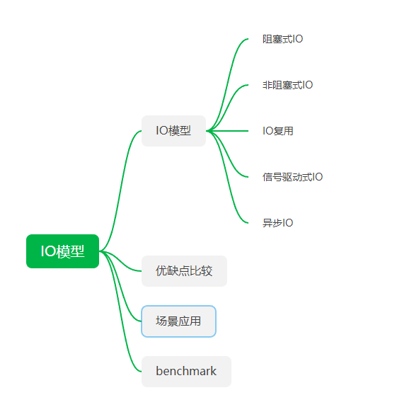

<!DOCTYPE HTML>
<html lang="zh-CN">
<head><meta name="generator" content="Hexo 3.8.0">
    <!--Setting-->
    <meta charset="UTF-8">
    <meta name="viewport" content="width=device-width, user-scalable=no, initial-scale=1.0, maximum-scale=1.0, minimum-scale=1.0">
    <meta http-equiv="X-UA-Compatible" content="IE=Edge,chrome=1">
    <meta http-equiv="Cache-Control" content="no-siteapp">
    <meta http-equiv="Cache-Control" content="no-transform">
    <meta name="renderer" content="webkit|ie-comp|ie-stand">
    <meta name="apple-mobile-web-app-capable" content="我的博客 - blog">
    <meta name="apple-mobile-web-app-status-bar-style" content="black">
    <meta name="format-detection" content="telephone=no,email=no,adress=no">
    <meta name="browsermode" content="application">
    <meta name="screen-orientation" content="portrait">
    <link rel="dns-prefetch" href="https://lives.xtcgch.ink">
    <!--SEO-->

<meta name="description" content="脑容量不够，笔记来凑">


<meta name="robots" content="all">
<meta name="google" content="all">
<meta name="googlebot" content="all">
<meta name="verify" content="all">
    <!--Title-->


<title>网络编程之IO模型 | 我的博客 - blog</title>


    <link rel="alternate" href="/atom.xml" title="我的博客 - blog" type="application/atom+xml">


    <link rel="icon" href="https://blog.xtcgch.ink/img/background/海绵宝宝.ico">

    


<link rel="stylesheet" href="/css/bootstrap.min.css?rev=3.3.7">
<link rel="stylesheet" href="/css/font-awesome.min.css?rev=4.5.0">
<link rel="stylesheet" href="/css/style.css?rev=@@hash">


    


    

</head>

</html>
<!--[if lte IE 8]>
<style>
    html{ font-size: 1em }
</style>
<![endif]-->
<!--[if lte IE 9]>
<div style="ie">你使用的浏览器版本过低，为了你更好的阅读体验，请更新浏览器的版本或者使用其他现代浏览器，比如Chrome、Firefox、Safari等。</div>
<![endif]-->

<body>
    <header class="main-header" style="background-image:url(https://blog.xtcgch.ink/img/head-bg.jpg)">
    <div class="main-header-box">
        <a class="header-avatar" href="/" title="unistd68">
            
        </a>
        <div class="branding">
        	<!--<h2 class="text-hide">Snippet主题,从未如此简单有趣</h2>-->
            
                <h2> 脑容量不够，笔记来凑 </h2>
            
    	</div>
    </div>
</header>
    <nav class="main-navigation">
    <div class="container">
        <div class="row">
            <div class="col-sm-12">
                <div class="navbar-header"><span class="nav-toggle-button collapsed pull-right" data-toggle="collapse" data-target="#main-menu" id="mnav">
                    <span class="sr-only"></span>
                        <i class="fa fa-bars"></i>
                    </span>
                    <a class="navbar-brand" href="https://lives.xtcgch.ink">我的博客 - blog</a>
                </div>
                <div class="collapse navbar-collapse" id="main-menu">
                    <ul class="menu">
                        
                            <li role="presentation" class="text-center">
                                <a href="https://blog.xtcgch.ink/"><i class="fa "></i>主页</a>
                            </li>
                        
                            <li role="presentation" class="text-center">
                                <a href="https://blog.xtcgch.ink/categories/原理/"><i class="fa "></i>原理</a>
                            </li>
                        
                            <li role="presentation" class="text-center">
                                <a href="https://blog.xtcgch.ink/categories/实战/"><i class="fa "></i>实战</a>
                            </li>
                        
                            <li role="presentation" class="text-center">
                                <a href="https://blog.xtcgch.ink/categories/开源/"><i class="fa "></i>开源</a>
                            </li>
                        
                            <li role="presentation" class="text-center">
                                <a href="https://blog.xtcgch.ink/categories/求职/"><i class="fa "></i>求职</a>
                            </li>
                        
                            <li role="presentation" class="text-center">
                                <a href="https://blog.xtcgch.ink/categories/其他/"><i class="fa "></i>其他</a>
                            </li>
                        
                            <li role="presentation" class="text-center">
                                <a href="https://blog.xtcgch.ink/archives/"><i class="fa "></i>时间轴</a>
                            </li>
                        
                    </ul>
                </div>
            </div>
        </div>
    </div>
</nav>
    <section class="content-wrap">
        <div class="container">
            <div class="row">
                <main class="col-md-8 main-content m-post">
                    <p id="process"></p>
<article class="post">
    <div class="post-head">
        <h1 id="网络编程之IO模型">
            
	            网络编程之IO模型
            
        </h1>
        <div class="post-meta">
    
    
    <span class="categories-meta fa-wrap">
        <i class="fa fa-folder-open-o"></i>
        <a href="https://blog.xtcgch.ink/categories/原理">
            原理
        </a>
    </span>
    

    
    <span class="fa-wrap">
        <i class="fa fa-tags"></i>
        <span class="tags-meta">
            
                
                    <a href="https://blog.xtcgch.ink/tags/LINUX" title="LINUX">
                        LINUX
                    </a>
                
                    <a href="https://blog.xtcgch.ink/tags/IO" title="IO">
                        IO
                    </a>
                
            
        </span>
    </span>
    

    
        
        <span class="fa-wrap">
            <i class="fa fa-clock-o"></i>
            <span class="date-meta">2020/11/22</span>
        </span>
        
    
</div>

            
            
    </div>
    
    <div class="post-body post-content">
        <p><strong>摘要：</strong>记录IO模型的相关知识。</p>
<a id="more"></a>
<hr>
<h2 id="脑图"><a href="#脑图" class="headerlink" title="脑图"></a>脑图</h2><p></p>
<h2 id="date-2020-11-03-18-13-36"><a href="#date-2020-11-03-18-13-36" class="headerlink" title="date: 2020-11-03 18:13:36"></a>date: 2020-11-03 18:13:36</h2><h2 id="IO模型"><a href="#IO模型" class="headerlink" title="IO模型"></a><table><tr><td bgcolor="#C7C7C7">IO模型</td></tr></table></h2><ol>
<li>阻塞式IO</li>
<li>非阻塞式IO</li>
<li>IO复用<ul>
<li>select</li>
<li>poll</li>
<li>epoll</li>
</ul>
</li>
<li>信号驱动式IO<ul>
<li>SIGIO</li>
</ul>
</li>
<li>异步IO<ul>
<li>POSIX的aio_系列函数</li>
</ul>
</li>
</ol>
<h3 id="阻塞式IO"><a href="#阻塞式IO" class="headerlink" title="阻塞式IO"></a><font color="#0000FF">阻塞式IO</font></h3><ul>
<li>函数：<code>recv()</code>。调用者所在的线程会被recv函数所阻塞，知道recv函数返回结果，而recv函数直到接收到对端发来数据后才会返回。</li>
</ul>
<p></p>
<h3 id="非阻塞式IO"><a href="#非阻塞式IO" class="headerlink" title="非阻塞式IO"></a><font color="#0000FF">非阻塞式IO</font></h3><ul>
<li>函数：<code>recvfrom()</code>。recvfrom函数在被调用后,无论是否接收到数据,都会立刻返回,没有接收到数据时返回值：<code>EWOULDBLOCK</code>。</li>
</ul>
<p></p>
<h3 id="IO复用"><a href="#IO复用" class="headerlink" title="IO复用"></a><font color="#0000FF">IO复用</font></h3><p>在调用recv前先调用select或者poll,这2个系统调用都可以在内核准备好数据(网络数据到达内核)时告知用户进程，这个时候再调用recv一定是有数据的。因此这一过程中它是阻塞于select或poll，而没有阻塞于recv。</p>
<p></p>
<h3 id="信号驱动式IO"><a href="#信号驱动式IO" class="headerlink" title="信号驱动式IO"></a><font color="#0000FF">信号驱动式IO</font></h3><p>通过调用sigaction注册信号函数，等内核数据准备好的时候系统中断当前程序，执行信号函数(在这里面调用recv)</p>
<p></p>
<h3 id="异步IO"><a href="#异步IO" class="headerlink" title="异步IO"></a><font color="#0000FF">异步IO</font></h3><p>调用aio_read，让内核等数据准备好，并且复制到用户进程空间后执行事先指定好的函数。</p>
<p></p>
<hr>
<h2 id="benchmark"><a href="#benchmark" class="headerlink" title="benchmark"></a><table><tr><td bgcolor="#C7C7C7">benchmark</td></tr></table></h2><hr>
<h2 id="比较"><a href="#比较" class="headerlink" title="比较"></a><table><tr><td bgcolor="#C7C7C7">比较</td></tr></table></h2><h3 id="IO模型比较"><a href="#IO模型比较" class="headerlink" title="IO模型比较"></a><font color="#0000FF">IO模型比较</font></h3><h3 id="同步和异步IO比较"><a href="#同步和异步IO比较" class="headerlink" title="同步和异步IO比较"></a><font color="#0000FF">同步和异步IO比较</font></h3><hr>
<h2 id="select"><a href="#select" class="headerlink" title="select"></a><table><tr><td bgcolor="#C7C7C7">select</td></tr></table></h2><ul>
<li><p>select的优缺点<br>优点：<br>（1）select的可移植性好，在某些unix下不支持poll.<br>（2）select对超时值提供了很好的精度，精确到微秒，而poll式毫秒。<br>缺点：<br>（1）单个进程可监视的fd数量被限制，默认是1024。<br>（2）需要维护一个用来存放大量fd的数据结构，这样会使得用户空间和内核空间在传递该结构时复制开销大。<br>（3）对fd进行扫描时是线性扫描，fd剧增后，IO效率降低，每次调用都对fd进行线性扫描遍历，随着fd的增加会造成遍历速度慢的问题。<br>（4）select函数超时参数在返回时也是未定义的，考虑到可移植性，每次超时之后进入下一个select之前都要重新设置超时参数</p>
</li>
<li><p>select函数介绍</p>
<ul>
<li>int select(int maxfdp,fd_set *readfds,fd_set *writefds,fd_set *errorfds,struct timeval *timeout);<ul>
<li>参数介绍<ul>
<li>maxfdp : 需要监视的最大文件描述符加1</li>
<li>readfds、writefds、errorfds：分别对应于需要检测的可读文件描述符的集合，可写文件描述符的集 合及异常文件描述符的集合。</li>
<li>timeout：等待时间，这个时间内，需要监视的描述符没有事件发⽣生则函数返回，返回值为0。设为NULL 表示阻塞式等待，一直等到有事件就绪，函数才会返回，0表示非阻塞式等待，没有事件就立即返回，大于0表示等待的时间</li>
</ul>
</li>
<li>返回值<ul>
<li>大于0：表示就绪时间的个数</li>
<li>等于0：表示timeout等待时间到了</li>
<li>小于0：表示调用失</li>
</ul>
</li>
</ul>
</li>
</ul>
</li>
<li><p>demo</p>
<figure class="highlight plain"><table><tr><td class="gutter"><pre><span class="line">1</span><br><span class="line">2</span><br><span class="line">3</span><br><span class="line">4</span><br><span class="line">5</span><br><span class="line">6</span><br><span class="line">7</span><br><span class="line">8</span><br><span class="line">9</span><br><span class="line">10</span><br><span class="line">11</span><br><span class="line">12</span><br><span class="line">13</span><br><span class="line">14</span><br><span class="line">15</span><br><span class="line">16</span><br><span class="line">17</span><br><span class="line">18</span><br><span class="line">19</span><br><span class="line">20</span><br><span class="line">21</span><br><span class="line">22</span><br><span class="line">23</span><br><span class="line">24</span><br><span class="line">25</span><br><span class="line">26</span><br><span class="line">27</span><br><span class="line">28</span><br><span class="line">29</span><br><span class="line">30</span><br><span class="line">31</span><br><span class="line">32</span><br><span class="line">33</span><br><span class="line">34</span><br><span class="line">35</span><br><span class="line">36</span><br><span class="line">37</span><br><span class="line">38</span><br><span class="line">39</span><br><span class="line">40</span><br><span class="line">41</span><br><span class="line">42</span><br><span class="line">43</span><br><span class="line">44</span><br><span class="line">45</span><br><span class="line">46</span><br><span class="line">47</span><br><span class="line">48</span><br><span class="line">49</span><br><span class="line">50</span><br><span class="line">51</span><br><span class="line">52</span><br><span class="line">53</span><br><span class="line">54</span><br><span class="line">55</span><br><span class="line">56</span><br><span class="line">57</span><br><span class="line">58</span><br><span class="line">59</span><br><span class="line">60</span><br><span class="line">61</span><br><span class="line">62</span><br><span class="line">63</span><br><span class="line">64</span><br><span class="line">65</span><br><span class="line">66</span><br><span class="line">67</span><br><span class="line">68</span><br><span class="line">69</span><br><span class="line">70</span><br><span class="line">71</span><br><span class="line">72</span><br><span class="line">73</span><br><span class="line">74</span><br><span class="line">75</span><br><span class="line">76</span><br><span class="line">77</span><br><span class="line">78</span><br><span class="line">79</span><br><span class="line">80</span><br><span class="line">81</span><br><span class="line">82</span><br><span class="line">83</span><br><span class="line">84</span><br><span class="line">85</span><br><span class="line">86</span><br><span class="line">87</span><br><span class="line">88</span><br><span class="line">89</span><br><span class="line">90</span><br><span class="line">91</span><br><span class="line">92</span><br><span class="line">93</span><br><span class="line">94</span><br><span class="line">95</span><br><span class="line">96</span><br><span class="line">97</span><br><span class="line">98</span><br><span class="line">99</span><br><span class="line">100</span><br><span class="line">101</span><br><span class="line">102</span><br><span class="line">103</span><br><span class="line">104</span><br><span class="line">105</span><br><span class="line">106</span><br><span class="line">107</span><br><span class="line">108</span><br><span class="line">109</span><br><span class="line">110</span><br><span class="line">111</span><br><span class="line">112</span><br><span class="line">113</span><br><span class="line">114</span><br><span class="line">115</span><br><span class="line">116</span><br><span class="line">117</span><br><span class="line">118</span><br><span class="line">119</span><br><span class="line">120</span><br><span class="line">121</span><br><span class="line">122</span><br><span class="line">123</span><br><span class="line">124</span><br><span class="line">125</span><br><span class="line">126</span><br><span class="line">127</span><br><span class="line">128</span><br><span class="line">129</span><br><span class="line">130</span><br><span class="line">131</span><br><span class="line">132</span><br><span class="line">133</span><br><span class="line">134</span><br><span class="line">135</span><br><span class="line">136</span><br><span class="line">137</span><br><span class="line">138</span><br><span class="line">139</span><br><span class="line">140</span><br><span class="line">141</span><br><span class="line">142</span><br><span class="line">143</span><br><span class="line">144</span><br><span class="line">145</span><br><span class="line">146</span><br><span class="line">147</span><br><span class="line">148</span><br><span class="line">149</span><br><span class="line">150</span><br><span class="line">151</span><br><span class="line">152</span><br><span class="line">153</span><br><span class="line">154</span><br><span class="line">155</span><br><span class="line">156</span><br><span class="line">157</span><br></pre></td><td class="code"><pre><span class="line">#include&lt;stdio.h&gt;</span><br><span class="line">#include&lt;sys/types.h&gt;</span><br><span class="line">#include&lt;sys/socket.h&gt;</span><br><span class="line">#include&lt;unistd.h&gt;</span><br><span class="line">#include&lt;netinet/in.h&gt;</span><br><span class="line">#include&lt;arpa/inet.h&gt;</span><br><span class="line">#include&lt;stdlib.h&gt;</span><br><span class="line">#include&lt;string.h&gt;</span><br><span class="line">#include&lt;sys/time.h&gt;</span><br><span class="line">static void Usage(const char* proc)</span><br><span class="line">&#123;</span><br><span class="line">    printf(&quot;%s [local_ip] [local_port]\n&quot;,proc);</span><br><span class="line">&#125;</span><br><span class="line">int array[4096];</span><br><span class="line">static int start_up(const char* _ip,int _port)</span><br><span class="line">&#123;</span><br><span class="line">    int sock = socket(AF_INET,SOCK_STREAM,0);</span><br><span class="line">    if(sock &lt; 0)</span><br><span class="line">    &#123;</span><br><span class="line">        perror(&quot;socket&quot;);</span><br><span class="line">        exit(1);</span><br><span class="line">    &#125;</span><br><span class="line">    struct sockaddr_in local;</span><br><span class="line">    local.sin_family = AF_INET;</span><br><span class="line">    local.sin_port = htons(_port);</span><br><span class="line">    local.sin_addr.s_addr = inet_addr(_ip);</span><br><span class="line">    if(bind(sock,(struct sockaddr*)&amp;local,sizeof(local)) &lt; 0)</span><br><span class="line">    &#123;</span><br><span class="line">        perror(&quot;bind&quot;);</span><br><span class="line">        exit(2);</span><br><span class="line">    &#125;</span><br><span class="line">    if(listen(sock,10) &lt; 0)</span><br><span class="line">    &#123;</span><br><span class="line">        perror(&quot;listen&quot;);</span><br><span class="line">        exit(3);</span><br><span class="line">    &#125;</span><br><span class="line">    return sock;</span><br><span class="line">&#125;</span><br><span class="line">int main(int argc,char* argv[])</span><br><span class="line">&#123;</span><br><span class="line">    if(argc != 3)</span><br><span class="line">    &#123;</span><br><span class="line">        Usage(argv[0]);</span><br><span class="line">        return -1;</span><br><span class="line">    &#125;</span><br><span class="line">    int listensock = start_up(argv[1],atoi(argv[2]));</span><br><span class="line">    int maxfd = 0;</span><br><span class="line">    fd_set rfds;</span><br><span class="line">    fd_set wfds;</span><br><span class="line">    array[0] = listensock;</span><br><span class="line">    int i = 1;</span><br><span class="line">    int array_size = sizeof(array)/sizeof(array[0]);</span><br><span class="line">    for(; i &lt; array_size;i++)</span><br><span class="line">    &#123;</span><br><span class="line">        array[i] = -1;</span><br><span class="line">    &#125;</span><br><span class="line">    while(1)</span><br><span class="line">    &#123;</span><br><span class="line">        FD_ZERO(&amp;rfds);</span><br><span class="line">        FD_ZERO(&amp;wfds);</span><br><span class="line">        for(i = 0;i &lt; array_size;++i)</span><br><span class="line">        &#123;</span><br><span class="line">            if(array[i] &gt; 0)</span><br><span class="line">            &#123;</span><br><span class="line">                FD_SET(array[i],&amp;rfds);</span><br><span class="line">                FD_SET(array[i],&amp;wfds);</span><br><span class="line">                if(array[i] &gt; maxfd)</span><br><span class="line">                &#123;</span><br><span class="line">                    maxfd = array[i];</span><br><span class="line">                &#125;</span><br><span class="line">            &#125;</span><br><span class="line">        &#125;</span><br><span class="line">        switch(select(maxfd + 1,&amp;rfds,&amp;wfds,NULL,NULL))</span><br><span class="line">        &#123;</span><br><span class="line">            case 0:</span><br><span class="line">                &#123;</span><br><span class="line">                    printf(&quot;timeout\n&quot;);</span><br><span class="line">                    break;</span><br><span class="line">                &#125;</span><br><span class="line">            case -1:</span><br><span class="line">                &#123;</span><br><span class="line">                    perror(&quot;select&quot;);</span><br><span class="line">                    break;</span><br><span class="line">                &#125;</span><br><span class="line">             default:</span><br><span class="line">                &#123;</span><br><span class="line">                    int j = 0;</span><br><span class="line">                    for(; j &lt; array_size; ++j)</span><br><span class="line">                    &#123;</span><br><span class="line">                        if(j == 0 &amp;&amp; FD_ISSET(array[j],&amp;rfds))</span><br><span class="line">                        &#123;</span><br><span class="line">                            //listensock happened read events</span><br><span class="line">                            struct sockaddr_in client;</span><br><span class="line">                            socklen_t len = sizeof(client);</span><br><span class="line">                            int new_sock = accept(listensock,(struct sockaddr*)&amp;client,&amp;len);</span><br><span class="line">                            if(new_sock &lt; 0)//accept failed</span><br><span class="line">                            &#123;</span><br><span class="line">                                perror(&quot;accept&quot;);</span><br><span class="line">                                continue;</span><br><span class="line">                            &#125;</span><br><span class="line">                            else//accept success</span><br><span class="line">                            &#123;</span><br><span class="line">                                printf(&quot;get a new client%s\n&quot;,inet_ntoa(client.sin_addr));</span><br><span class="line">                                fflush(stdout);</span><br><span class="line">                                int k = 1;</span><br><span class="line">                                for(; k &lt; array_size;++k)</span><br><span class="line">                                &#123;</span><br><span class="line">                                    if(array[k] &lt; 0)</span><br><span class="line">                                    &#123;</span><br><span class="line">                                        array[k] = new_sock;</span><br><span class="line">                                        if(new_sock &gt; maxfd)</span><br><span class="line">                                            maxfd = new_sock;</span><br><span class="line">                                        break;</span><br><span class="line">                                    &#125;</span><br><span class="line">                                &#125;</span><br><span class="line">                                if(k == array_size)</span><br><span class="line">                                &#123;</span><br><span class="line">                                    close(new_sock);</span><br><span class="line">                                &#125;</span><br><span class="line">                            &#125;</span><br><span class="line">                        &#125;//j == 0</span><br><span class="line">                        else if(j != 0 &amp;&amp; FD_ISSET(array[j], &amp;rfds))</span><br><span class="line">                        &#123;</span><br><span class="line">                            //new_sock happend read events</span><br><span class="line">                            char buf[1024];</span><br><span class="line">                            ssize_t s = read(array[j],buf,sizeof(buf) - 1);</span><br><span class="line">                            if(s &gt; 0)//read success</span><br><span class="line">                            &#123;</span><br><span class="line">                                buf[s] = 0;</span><br><span class="line">                                printf(&quot;clientsay#%s\n&quot;,buf);</span><br><span class="line">                                if(FD_ISSET(array[j],&amp;wfds))</span><br><span class="line">                                &#123;</span><br><span class="line">                                    const char *msg = &quot;HTTP/1.0 200 OK &lt;\r\n\r\n&lt;html&gt;&lt;h1&gt;yingying beautiful&lt;/h1&gt;&lt;/html&gt;\r\n&quot;;</span><br><span class="line">                                    write(array[j],msg,strlen(msg));</span><br><span class="line"></span><br><span class="line">                                &#125;</span><br><span class="line">                            &#125;</span><br><span class="line">                            else if(0 == s)</span><br><span class="line">                            &#123;</span><br><span class="line">                                printf(&quot;client quit!\n&quot;);</span><br><span class="line">                                close(array[j]);</span><br><span class="line">                                array[j] = -1;</span><br><span class="line">                            &#125;</span><br><span class="line">                            else</span><br><span class="line">                            &#123;</span><br><span class="line">                                perror(&quot;read&quot;);</span><br><span class="line">                                close(array[j]);</span><br><span class="line">                                array[j] = -1;</span><br><span class="line">                            &#125;</span><br><span class="line">                        &#125;//else j != 0  </span><br><span class="line">                    &#125;</span><br><span class="line">                    break;</span><br><span class="line">                &#125;</span><br><span class="line">        &#125;</span><br><span class="line">    &#125;</span><br><span class="line">    return 0;</span><br><span class="line">&#125;</span><br></pre></td></tr></table></figure>
</li>
</ul>
<hr>
<h2 id="poll"><a href="#poll" class="headerlink" title="poll"></a><table><tr><td bgcolor="#C7C7C7">poll</td></tr></table></h2><ul>
<li><p>poll函数的优缺点<br>优点：<br>（1）不要求计算最大文件描述符+1的大小。<br>（2）应付大数量的文件描述符时比select要快。<br>（3）没有最大连接数的限制是基于链表存储的。<br>缺点：<br>（1）大量的fd数组被整体复制于内核态和用户态之间，而不管这样的复制是不是有意义。<br>（2）同select相同的是调用结束后需要轮询来获取就绪描述符</p>
</li>
<li><p>poll函数介绍</p>
<ul>
<li>int poll ( struct pollfd * fds, unsigned int nfds, int timeout);<ul>
<li>参数介绍<ul>
<li>fds : 对应上述介绍的结构体指针</li>
<li>nfds : 标记数组中结构体元素的总个数。</li>
<li>timeout : 超时时间 ，等于0表示非阻塞式等待，小于0表示阻塞式等待，大于0表示等待的时间。</li>
</ul>
</li>
<li>返回值：<ul>
<li>成功时返回fds数组中事件就绪的文件描述符的个数</li>
<li>0：表示超时时间到了。</li>
<li>-1：表示调用失败，对应的错误码会被设置。</li>
</ul>
</li>
</ul>
</li>
</ul>
</li>
<li><p>demo：</p>
<figure class="highlight plain"><table><tr><td class="gutter"><pre><span class="line">1</span><br><span class="line">2</span><br><span class="line">3</span><br><span class="line">4</span><br><span class="line">5</span><br><span class="line">6</span><br><span class="line">7</span><br><span class="line">8</span><br><span class="line">9</span><br><span class="line">10</span><br><span class="line">11</span><br><span class="line">12</span><br><span class="line">13</span><br><span class="line">14</span><br><span class="line">15</span><br><span class="line">16</span><br><span class="line">17</span><br><span class="line">18</span><br><span class="line">19</span><br><span class="line">20</span><br><span class="line">21</span><br><span class="line">22</span><br><span class="line">23</span><br><span class="line">24</span><br><span class="line">25</span><br><span class="line">26</span><br><span class="line">27</span><br><span class="line">28</span><br><span class="line">29</span><br><span class="line">30</span><br><span class="line">31</span><br><span class="line">32</span><br><span class="line">33</span><br><span class="line">34</span><br><span class="line">35</span><br><span class="line">36</span><br><span class="line">37</span><br><span class="line">38</span><br><span class="line">39</span><br><span class="line">40</span><br><span class="line">41</span><br><span class="line">42</span><br><span class="line">43</span><br><span class="line">44</span><br><span class="line">45</span><br><span class="line">46</span><br><span class="line">47</span><br><span class="line">48</span><br><span class="line">49</span><br><span class="line">50</span><br><span class="line">51</span><br><span class="line">52</span><br><span class="line">53</span><br><span class="line">54</span><br><span class="line">55</span><br><span class="line">56</span><br><span class="line">57</span><br><span class="line">58</span><br><span class="line">59</span><br><span class="line">60</span><br><span class="line">61</span><br><span class="line">62</span><br><span class="line">63</span><br><span class="line">64</span><br><span class="line">65</span><br><span class="line">66</span><br><span class="line">67</span><br><span class="line">68</span><br><span class="line">69</span><br><span class="line">70</span><br><span class="line">71</span><br><span class="line">72</span><br><span class="line">73</span><br><span class="line">74</span><br><span class="line">75</span><br><span class="line">76</span><br><span class="line">77</span><br><span class="line">78</span><br><span class="line">79</span><br><span class="line">80</span><br><span class="line">81</span><br><span class="line">82</span><br><span class="line">83</span><br><span class="line">84</span><br><span class="line">85</span><br><span class="line">86</span><br><span class="line">87</span><br><span class="line">88</span><br><span class="line">89</span><br><span class="line">90</span><br><span class="line">91</span><br><span class="line">92</span><br><span class="line">93</span><br><span class="line">94</span><br><span class="line">95</span><br><span class="line">96</span><br><span class="line">97</span><br><span class="line">98</span><br><span class="line">99</span><br><span class="line">100</span><br><span class="line">101</span><br><span class="line">102</span><br><span class="line">103</span><br><span class="line">104</span><br><span class="line">105</span><br><span class="line">106</span><br><span class="line">107</span><br><span class="line">108</span><br><span class="line">109</span><br><span class="line">110</span><br><span class="line">111</span><br><span class="line">112</span><br><span class="line">113</span><br><span class="line">114</span><br><span class="line">115</span><br><span class="line">116</span><br><span class="line">117</span><br><span class="line">118</span><br><span class="line">119</span><br><span class="line">120</span><br><span class="line">121</span><br><span class="line">122</span><br><span class="line">123</span><br><span class="line">124</span><br><span class="line">125</span><br><span class="line">126</span><br><span class="line">127</span><br><span class="line">128</span><br><span class="line">129</span><br><span class="line">130</span><br><span class="line">131</span><br><span class="line">132</span><br><span class="line">133</span><br><span class="line">134</span><br><span class="line">135</span><br><span class="line">136</span><br><span class="line">137</span><br><span class="line">138</span><br><span class="line">139</span><br><span class="line">140</span><br><span class="line">141</span><br><span class="line">142</span><br><span class="line">143</span><br><span class="line">144</span><br><span class="line">145</span><br><span class="line">146</span><br><span class="line">147</span><br></pre></td><td class="code"><pre><span class="line">#include&lt;stdio.h&gt;</span><br><span class="line">#include &lt;unistd.h&gt;</span><br><span class="line">#include&lt;stdlib.h&gt;</span><br><span class="line">#include&lt;string.h&gt;</span><br><span class="line">#include&lt;sys/types.h&gt;</span><br><span class="line">#include&lt;sys/socket.h&gt;</span><br><span class="line">#include&lt;netinet/in.h&gt;</span><br><span class="line">#include&lt;arpa/inet.h&gt;</span><br><span class="line">#include&lt;poll.h&gt;</span><br><span class="line">static void usage(const char *proc)</span><br><span class="line">&#123;</span><br><span class="line">    printf(&quot;%s [local_ip] [local_port]\n&quot;,proc);</span><br><span class="line">&#125;</span><br><span class="line">int start_up(const char*_ip,int _port)</span><br><span class="line">&#123;</span><br><span class="line">    int sock = socket(AF_INET,SOCK_STREAM,0);</span><br><span class="line">    if(sock &lt; 0)</span><br><span class="line">    &#123;</span><br><span class="line">        perror(&quot;socket&quot;);</span><br><span class="line">        return 2;</span><br><span class="line">    &#125;</span><br><span class="line">    int opt = 1;</span><br><span class="line">    setsockopt(sock,SOL_SOCKET,SO_REUSEADDR,&amp;opt,sizeof(opt));</span><br><span class="line">    struct sockaddr_in local;</span><br><span class="line">    local.sin_family = AF_INET;</span><br><span class="line">    local.sin_port = htons(_port);</span><br><span class="line">    local.sin_addr.s_addr = inet_addr(_ip);</span><br><span class="line">    if(bind(sock,(struct sockaddr*)&amp;local,sizeof(local)) &lt; 0)</span><br><span class="line">    &#123;</span><br><span class="line">        perror(&quot;bind&quot;);</span><br><span class="line">        return 3;</span><br><span class="line">    &#125;</span><br><span class="line">    if(listen(sock,10) &lt; 0)</span><br><span class="line">    &#123;</span><br><span class="line">        perror(&quot;listen&quot;);</span><br><span class="line">        return 4;</span><br><span class="line">    &#125;</span><br><span class="line">    return sock;</span><br><span class="line">&#125;</span><br><span class="line">int main(int argc, char*argv[])</span><br><span class="line">&#123;</span><br><span class="line">    if(argc != 3)</span><br><span class="line">    &#123;</span><br><span class="line">        usage(argv[0]);</span><br><span class="line">        return 1;</span><br><span class="line">    &#125;</span><br><span class="line">    int sock = start_up(argv[1],atoi(argv[2]));</span><br><span class="line">    struct pollfd peerfd[1024];</span><br><span class="line">    peerfd[0].fd = sock;</span><br><span class="line">    peerfd[0].events = POLLIN;</span><br><span class="line">    int nfds = 1;</span><br><span class="line">    int ret;</span><br><span class="line">    int maxsize = sizeof(peerfd)/sizeof(peerfd[0]);</span><br><span class="line">    int i = 1;</span><br><span class="line">    int timeout = -1;</span><br><span class="line">    for(; i &lt; maxsize; ++i)</span><br><span class="line">    &#123;</span><br><span class="line">        peerfd[i].fd = -1;</span><br><span class="line">    &#125;</span><br><span class="line">    while(1)</span><br><span class="line">    &#123;</span><br><span class="line">        switch(ret = poll(peerfd,nfds,timeout))</span><br><span class="line">        &#123;</span><br><span class="line">            case 0:</span><br><span class="line">                printf(&quot;timeout...\n&quot;);</span><br><span class="line">                break;</span><br><span class="line">            case -1:</span><br><span class="line">                perror(&quot;poll&quot;);</span><br><span class="line">                break;</span><br><span class="line">            default:</span><br><span class="line">                &#123;</span><br><span class="line">                        if(peerfd[0].revents &amp; POLLIN)</span><br><span class="line">                        &#123;</span><br><span class="line">                            struct sockaddr_in client;</span><br><span class="line">                            socklen_t len = sizeof(client);</span><br><span class="line">                            int new_sock = accept(sock,\</span><br><span class="line">                                    (struct sockaddr*)&amp;client,&amp;len);</span><br><span class="line">                            printf(&quot;accept finish %d\n&quot;,new_sock);</span><br><span class="line">                            if(new_sock &lt; 0)</span><br><span class="line">                            &#123;</span><br><span class="line">                                perror(&quot;accept&quot;);</span><br><span class="line">                                continue;</span><br><span class="line">                            &#125;</span><br><span class="line">                            printf(&quot;get a new client\n&quot;);</span><br><span class="line">                                int j = 1;</span><br><span class="line">                                for(; j &lt; maxsize; ++j)</span><br><span class="line">                                &#123;</span><br><span class="line">                                    if(peerfd[j].fd &lt; 0)</span><br><span class="line">                                    &#123;</span><br><span class="line">                                        peerfd[j].fd = new_sock;</span><br><span class="line">                                        break;</span><br><span class="line">                                    &#125;</span><br><span class="line">                                &#125;</span><br><span class="line">                                if(j == maxsize)</span><br><span class="line">                                &#123;</span><br><span class="line">                                    printf(&quot;to many clients...\n&quot;);</span><br><span class="line">                                    close(new_sock);</span><br><span class="line">                                &#125;</span><br><span class="line">                                peerfd[j].events = POLLIN;</span><br><span class="line">                                if(j + 1 &gt; nfds)</span><br><span class="line">                                    nfds = j + 1;</span><br><span class="line">                        &#125;</span><br><span class="line">                        for(i = 1;i &lt; nfds;++i)</span><br><span class="line">                        &#123;</span><br><span class="line">                            if(peerfd[i].revents &amp; POLLIN)</span><br><span class="line">                        &#123;</span><br><span class="line">                            printf(&quot;read ready\n&quot;);</span><br><span class="line">                            char buf[1024];</span><br><span class="line">                            ssize_t s = read(peerfd[i].fd,buf, \</span><br><span class="line">                                    sizeof(buf) - 1);</span><br><span class="line">                            if(s &gt; 0)</span><br><span class="line">                            &#123;</span><br><span class="line">                                buf[s] = 0;</span><br><span class="line">                                printf(&quot;client say#%s&quot;,buf);</span><br><span class="line">                                fflush(stdout);</span><br><span class="line">                                peerfd[i].events = POLLOUT;</span><br><span class="line">                            &#125;</span><br><span class="line">                        else if(s &lt;= 0)</span><br><span class="line">                            &#123;</span><br><span class="line">                                close(peerfd[i].fd);</span><br><span class="line">                                peerfd[i].fd = -1;</span><br><span class="line">                            &#125;</span><br><span class="line">                            else</span><br><span class="line">                            &#123;</span><br><span class="line"></span><br><span class="line">                            &#125;</span><br><span class="line">                        &#125;//i != 0</span><br><span class="line">                        else if(peerfd[i].revents &amp; POLLOUT)</span><br><span class="line">                        &#123;</span><br><span class="line">                            const char *msg = &quot;HTTP/1.0 200 OK \</span><br><span class="line">                                         &lt;\r\n\r\n&lt;html&gt;&lt;h1&gt; \</span><br><span class="line">                                         yingying beautiful \</span><br><span class="line">                                         &lt;/h1&gt;&lt;/html&gt;\r\n&quot;;</span><br><span class="line">                            write(peerfd[i].fd,msg,strlen(msg));</span><br><span class="line">                            close(peerfd[i].fd);</span><br><span class="line">                            peerfd[i].fd = -1;</span><br><span class="line">                        &#125;</span><br><span class="line">                        else</span><br><span class="line">                        &#123;</span><br><span class="line">                        &#125;</span><br><span class="line">                    &#125;//for</span><br><span class="line">                &#125;//default</span><br><span class="line">                break;</span><br><span class="line">        &#125;</span><br><span class="line">    &#125;</span><br><span class="line">    return 0;</span><br><span class="line">&#125;</span><br></pre></td></tr></table></figure>
</li>
</ul>
<hr>
<h2 id="epoll"><a href="#epoll" class="headerlink" title="epoll"></a><table><tr><td bgcolor="#C7C7C7">epoll</td></tr></table></h2><ul>
<li><p>epoll函数的优缺点<br>优点：<br>（1）支持一个进程打开大数目的socket描述符(FD)<br>select 最不能忍受的是一个进程所打开的FD是有一定限制的，由FD_SETSIZE设置，默认值是2048。对于那些需要支持的上万连接数目的IM服务器来说显 然太少了。这时候你一是可以选择修改这个宏然后重新编译内核，不过资料也同时指出这样会带来网络效率的下降，二是可以选择多进程的解决方案(传统的 Apache方案)，不过虽然linux上面创建进程的代价比较小，但仍旧是不可忽视的，加上进程间数据同步远比不上线程间同步的高效，所以也不是一种完 美的方案。不过 epoll则没有这个限制，它所支持的FD上限是最大可以打开文件的数目，这个数字一般远大于2048,举个例子,在1GB内存的机器上大约是10万左 右，具体数目可以cat /proc/sys/fs/file-max察看,一般来说这个数目和系统内存关系很大。<br>（2）IO效率不随FD数目增加而线性下降<br>传统的select/poll另一个致命弱点就是当你拥有一个很大的socket集合，不过由于网络延时，任一时间只有部分的socket是”活跃”的， 但是select/poll每次调用都会线性扫描全部的集合，导致效率呈现线性下降。但是epoll不存在这个问题，它只会对”活跃”的socket进行 操作—这是因为在内核实现中epoll是根据每个fd上面的callback函数实现的。那么，只有”活跃”的socket才会主动的去调用 callback函数，其他idle状态socket则不会，在这点上，epoll实现了一个”伪”AIO，因为这时候推动力在os内核。在一些 benchmark中，如果所有的socket基本上都是活跃的—比如一个高速LAN环境，epoll并不比select/poll有什么效率，相 反，如果过多使用epoll_ctl,效率相比还有稍微的下降。但是一旦使用idle connections模拟WAN环境,epoll的效率就远在select/poll之上了。<br>（3）使用mmap加速内核与用户空间的消息传递。<br>这点实际上涉及到epoll的具体实现了。无论是select,poll还是epoll都需要内核把FD消息通知给用户空间，如何避免不必要的内存拷贝就 很重要，在这点上，epoll是通过内核于用户空间mmap同一块内存实现的。而如果你想我一样从2.5内核就关注epoll的话，一定不会忘记手工 mmap这一步的。<br>（4）内核微调<br>这一点其实不算epoll的优点了，而是整个linux平台的优点。也许你可以怀疑linux平台，但是你无法回避linux平台赋予你微调内核的能力。 比如，内核TCP/IP协议栈使用内存池管理sk_buff结构，那么可以在运行时期动态调整这个内存pool(skb_head_pool)的大小 — 通过echo XXXX&gt;/proc/sys/net/core/hot_list_length完成。再比如listen函数的第2个参数(TCP完成3次握手 的数据包队列长度)，也可以根据你平台内存大小动态调整。更甚至在一个数据包面数目巨大但同时每个数据包本身大小却很小的特殊系统上尝试最新的NAPI网 卡驱动架构</p>
</li>
<li><p>epoll函数相关系统调用</p>
<ul>
<li>int epoll_create(int size);</li>
<li>int epoll_ctl(int epfd, int op, int fd, struct epoll_event *event );<ul>
<li>epfd : epoll的专用描述符。</li>
<li>op : 相关操作，通常用以下宏来表示</li>
<li>event ： 通知内核需要监听的事件<ul>
<li>EPOLL_CTL_ADD：注册新的fd到epfd中</li>
<li>EPOLL_CTL_MOD：修改已经注册的fd的监听事件</li>
<li>EPOLL_CTL_DEL：从epfd中删除⼀一个fd</li>
</ul>
</li>
<li>fd : 需要监听的事件</li>
</ul>
</li>
<li>int epoll_wait(int epfd, struct epoll_event * events, int maxevents, int timeout)</li>
</ul>
</li>
<li><p>demo:</p>
</li>
</ul>
<figure class="highlight plain"><table><tr><td class="gutter"><pre><span class="line">1</span><br><span class="line">2</span><br><span class="line">3</span><br><span class="line">4</span><br><span class="line">5</span><br><span class="line">6</span><br><span class="line">7</span><br><span class="line">8</span><br><span class="line">9</span><br><span class="line">10</span><br><span class="line">11</span><br><span class="line">12</span><br><span class="line">13</span><br><span class="line">14</span><br><span class="line">15</span><br><span class="line">16</span><br><span class="line">17</span><br><span class="line">18</span><br><span class="line">19</span><br><span class="line">20</span><br><span class="line">21</span><br><span class="line">22</span><br><span class="line">23</span><br><span class="line">24</span><br><span class="line">25</span><br><span class="line">26</span><br><span class="line">27</span><br><span class="line">28</span><br><span class="line">29</span><br><span class="line">30</span><br><span class="line">31</span><br><span class="line">32</span><br><span class="line">33</span><br><span class="line">34</span><br><span class="line">35</span><br><span class="line">36</span><br><span class="line">37</span><br><span class="line">38</span><br><span class="line">39</span><br><span class="line">40</span><br><span class="line">41</span><br><span class="line">42</span><br><span class="line">43</span><br><span class="line">44</span><br><span class="line">45</span><br><span class="line">46</span><br><span class="line">47</span><br><span class="line">48</span><br><span class="line">49</span><br><span class="line">50</span><br><span class="line">51</span><br><span class="line">52</span><br><span class="line">53</span><br><span class="line">54</span><br><span class="line">55</span><br><span class="line">56</span><br><span class="line">57</span><br><span class="line">58</span><br><span class="line">59</span><br><span class="line">60</span><br><span class="line">61</span><br><span class="line">62</span><br><span class="line">63</span><br><span class="line">64</span><br><span class="line">65</span><br><span class="line">66</span><br><span class="line">67</span><br><span class="line">68</span><br><span class="line">69</span><br><span class="line">70</span><br><span class="line">71</span><br><span class="line">72</span><br><span class="line">73</span><br><span class="line">74</span><br><span class="line">75</span><br><span class="line">76</span><br><span class="line">77</span><br><span class="line">78</span><br><span class="line">79</span><br><span class="line">80</span><br><span class="line">81</span><br><span class="line">82</span><br><span class="line">83</span><br><span class="line">84</span><br><span class="line">85</span><br><span class="line">86</span><br><span class="line">87</span><br><span class="line">88</span><br><span class="line">89</span><br><span class="line">90</span><br><span class="line">91</span><br><span class="line">92</span><br><span class="line">93</span><br><span class="line">94</span><br><span class="line">95</span><br><span class="line">96</span><br><span class="line">97</span><br><span class="line">98</span><br><span class="line">99</span><br><span class="line">100</span><br><span class="line">101</span><br><span class="line">102</span><br><span class="line">103</span><br><span class="line">104</span><br><span class="line">105</span><br><span class="line">106</span><br><span class="line">107</span><br><span class="line">108</span><br><span class="line">109</span><br><span class="line">110</span><br><span class="line">111</span><br><span class="line">112</span><br><span class="line">113</span><br><span class="line">114</span><br><span class="line">115</span><br><span class="line">116</span><br><span class="line">117</span><br><span class="line">118</span><br><span class="line">119</span><br><span class="line">120</span><br><span class="line">121</span><br><span class="line">122</span><br><span class="line">123</span><br><span class="line">124</span><br><span class="line">125</span><br><span class="line">126</span><br><span class="line">127</span><br><span class="line">128</span><br><span class="line">129</span><br><span class="line">130</span><br><span class="line">131</span><br><span class="line">132</span><br><span class="line">133</span><br><span class="line">134</span><br><span class="line">135</span><br><span class="line">136</span><br><span class="line">137</span><br><span class="line">138</span><br><span class="line">139</span><br><span class="line">140</span><br><span class="line">141</span><br><span class="line">142</span><br></pre></td><td class="code"><pre><span class="line">#include&lt;stdio.h&gt;</span><br><span class="line">#include &lt;unistd.h&gt;</span><br><span class="line">#include&lt;sys/types.h&gt;</span><br><span class="line">#include&lt;sys/socket.h&gt;</span><br><span class="line">#include&lt;netinet/in.h&gt;</span><br><span class="line">#include&lt;arpa/inet.h&gt;</span><br><span class="line">#include&lt;stdlib.h&gt;</span><br><span class="line">#include&lt;string.h&gt;</span><br><span class="line">#include&lt;sys/epoll.h&gt;</span><br><span class="line">static void usage_info(const char* proc)</span><br><span class="line">&#123;</span><br><span class="line">    printf(&quot;%s [local_ip] [local_port]\n&quot;,proc);</span><br><span class="line">&#125;</span><br><span class="line">int start_up(const char*_ip,int _port)</span><br><span class="line">&#123;</span><br><span class="line">    int sock = socket(AF_INET,SOCK_STREAM,0);</span><br><span class="line">    if(sock &lt; 0)</span><br><span class="line">    &#123;</span><br><span class="line">        perror(&quot;socket&quot;);</span><br><span class="line">        exit(2);</span><br><span class="line">    &#125;</span><br><span class="line">    struct sockaddr_in local;</span><br><span class="line">    local.sin_family = AF_INET;</span><br><span class="line">    local.sin_port = htons(_port);</span><br><span class="line">    local.sin_addr.s_addr = inet_addr(_ip);</span><br><span class="line">    if(bind(sock,(struct sockaddr*)&amp;local,sizeof(local)) &lt; 0)</span><br><span class="line">    &#123;</span><br><span class="line">        perror(&quot;bind&quot;);</span><br><span class="line">        exit(3);</span><br><span class="line">    &#125;</span><br><span class="line">    if(listen(sock,10)&lt; 0)</span><br><span class="line">    &#123;</span><br><span class="line">        perror(&quot;listen&quot;);</span><br><span class="line">        exit(4);</span><br><span class="line">    &#125;</span><br><span class="line">    return sock;</span><br><span class="line">&#125;</span><br><span class="line">int main(int argc, char*argv[])</span><br><span class="line">&#123;</span><br><span class="line">    if(argc != 3)</span><br><span class="line">    &#123;</span><br><span class="line">        usage_info(argv[0]);</span><br><span class="line">        return 1;</span><br><span class="line">    &#125;</span><br><span class="line">    int sock = start_up(argv[1],atoi(argv[2]));</span><br><span class="line">    int epollfd = epoll_create(256);</span><br><span class="line">    if(epollfd &lt; 0)</span><br><span class="line">    &#123;</span><br><span class="line">        perror(&quot;epoll_create&quot;);</span><br><span class="line">        return 5;</span><br><span class="line">    &#125;</span><br><span class="line">    struct epoll_event ev;</span><br><span class="line">    ev.events = EPOLLIN;</span><br><span class="line">    ev.data.fd = sock;</span><br><span class="line">    if(epoll_ctl(epollfd,EPOLL_CTL_ADD,sock,&amp;ev) &lt; 0)</span><br><span class="line">    &#123;</span><br><span class="line">        perror(&quot;epoll_ctl&quot;);</span><br><span class="line">        return 6;</span><br><span class="line">    &#125;</span><br><span class="line">    int evnums = 0;//epoll_wait return val</span><br><span class="line">    struct epoll_event evs[64];</span><br><span class="line">    int timeout = -1;</span><br><span class="line">    while(1)</span><br><span class="line">    &#123;</span><br><span class="line">        switch(evnums = epoll_wait(epollfd,evs,64,timeout))</span><br><span class="line">        &#123;</span><br><span class="line">            case 0:</span><br><span class="line">     printf(&quot;timeout...\n&quot;);</span><br><span class="line">     break;</span><br><span class="line">            case -1:</span><br><span class="line">     perror(&quot;epoll_wait&quot;);</span><br><span class="line">     break;</span><br><span class="line">default:</span><br><span class="line">     &#123;</span><br><span class="line">         int i = 0;</span><br><span class="line">         for(; i &lt; evnums; ++i)</span><br><span class="line">         &#123;</span><br><span class="line">             struct sockaddr_in client;</span><br><span class="line">             socklen_t len = sizeof(client);</span><br><span class="line">             if(evs[i].data.fd == sock \</span><br><span class="line">                     &amp;&amp; evs[i].events &amp; EPOLLIN)</span><br><span class="line">             &#123;</span><br><span class="line">                 int new_sock = accept(sock, \</span><br><span class="line">                         (struct sockaddr*)&amp;client,&amp;len);</span><br><span class="line">                 if(new_sock &lt; 0)</span><br><span class="line">                 &#123;</span><br><span class="line">                     perror(&quot;accept&quot;);</span><br><span class="line">                     continue;</span><br><span class="line">                 &#125;//if accept failed</span><br><span class="line">                 else </span><br><span class="line">                 &#123;</span><br><span class="line">                     printf(&quot;Get a new client[%s]\n&quot;, \</span><br><span class="line">                             inet_ntoa(client.sin_addr));</span><br><span class="line">                     ev.data.fd = new_sock;</span><br><span class="line">                     ev.events = EPOLLIN;</span><br><span class="line">                     epoll_ctl(epollfd,EPOLL_CTL_ADD,\</span><br><span class="line">                             new_sock,&amp;ev);</span><br><span class="line">                 &#125;//accept success</span><br><span class="line"></span><br><span class="line">             &#125;//if fd == sock</span><br><span class="line">             else if(evs[i].data.fd != sock &amp;&amp; \</span><br><span class="line">                     evs[i].events &amp; EPOLLIN)</span><br><span class="line">             &#123;</span><br><span class="line">                 char buf[1024];</span><br><span class="line">                 ssize_t s = read(evs[i].data.fd,buf,sizeof(buf) - 1);</span><br><span class="line">                 if(s &gt; 0)</span><br><span class="line">                 &#123;</span><br><span class="line">                     buf[s] = 0;</span><br><span class="line">                     printf(&quot;client say#%s\n&quot;,buf);</span><br><span class="line">                     ev.data.fd = evs[i].data.fd;</span><br><span class="line">                     ev.events = EPOLLOUT;</span><br><span class="line">                     epoll_ctl(epollfd,EPOLL_CTL_MOD, \</span><br><span class="line">                             evs[i].data.fd,&amp;ev);</span><br><span class="line">                 &#125;//s &gt; 0</span><br><span class="line">                 else</span><br><span class="line">                 &#123;</span><br><span class="line">                     close(evs[i].data.fd);</span><br><span class="line">                     epoll_ctl(epollfd,EPOLL_CTL_DEL, \</span><br><span class="line">                             evs[i].data.fd,NULL);</span><br><span class="line">                 &#125;</span><br><span class="line">		 //printf(&quot;get a new message\n&quot;);</span><br><span class="line">             &#125;//fd != sock</span><br><span class="line">             else if(evs[i].data.fd != sock \</span><br><span class="line">                     &amp;&amp; evs[i].events &amp; EPOLLOUT)</span><br><span class="line">             &#123;</span><br><span class="line">		 printf(&quot;one client logout\n&quot;);</span><br><span class="line">                 const char *msg =  &quot;HTTP/1.0 200 OK &lt;\r\n\r\n&lt;html&gt;&lt;h1&gt;yingying beautiful &lt;/h1&gt;&lt;/html&gt;\r\n&quot;;</span><br><span class="line">                 write(evs[i].data.fd,msg,strlen(msg));</span><br><span class="line">                 close(evs[i].data.fd);</span><br><span class="line">                 epoll_ctl(epollfd,EPOLL_CTL_DEL, \</span><br><span class="line">                             evs[i].data.fd,NULL);</span><br><span class="line">             &#125;//EPOLLOUT</span><br><span class="line">             else</span><br><span class="line">             &#123;</span><br><span class="line">             &#125;</span><br><span class="line">         &#125;//for</span><br><span class="line">     &#125;//default</span><br><span class="line">     break;</span><br><span class="line">        &#125;//switch</span><br><span class="line">    &#125;//while</span><br><span class="line">    return 0;</span><br><span class="line">&#125;</span><br></pre></td></tr></table></figure>
<p>EPOLL事件有两种模型：</p>
<p>Level Triggered (LT) 水平触发<br>.socket接收缓冲区不为空 有数据可读 读事件一直触发<br>.socket发送缓冲区不满 可以继续写入数据 写事件一直触发<br>符合思维习惯，epoll_wait返回的事件就是socket的状态</p>
<p>Edge Triggered (ET) 边沿触发<br>.socket的接收缓冲区状态变化时触发读事件，即空的接收缓冲区刚接收到数据时触发读事件<br>.socket的发送缓冲区状态变化时触发写事件，即满的缓冲区刚空出空间时触发读事件<br>仅在状态变化时触发事件</p>
<p>换种思路理解：</p>
<p>LT模式：当epoll_wait检测到描述符事件发生并将此事件通知应用程序，应用程序可以不立即处理该事件。下次调用epoll_wait时，会再次响应应用程序并通知此事件。<br>ET模式：当epoll_wait检测到描述符事件发生并将此事件通知应用程序，应用程序必须立即处理该事件。如果不处理，下次调用epoll_wait时，不会再次响应应用程序并通知此事件。</p>
<p>ET还是LT?</p>
<p>LT的处理过程：<br>. accept一个连接，添加到epoll中监听EPOLLIN事件<br>. 当EPOLLIN事件到达时，read fd中的数据并处理<br>. 当需要写出数据时，把数据write到fd中；如果数据较大，无法一次性写出，那么在epoll中监听EPOLLOUT事件<br>. 当EPOLLOUT事件到达时，继续把数据write到fd中；如果数据写出完毕，那么在epoll中关闭EPOLLOUT事件</p>
<p>ET的处理过程：<br>. accept一个一个连接，添加到epoll中监听EPOLLIN|EPOLLOUT事件<br>. 当EPOLLIN事件到达时，read fd中的数据并处理，read需要一直读，直到返回EAGAIN为止<br>. 当需要写出数据时，把数据write到fd中，直到数据全部写完，或者write返回EAGAIN<br>. 当EPOLLOUT事件到达时，继续把数据write到fd中，直到数据全部写完，或者write返回EAGAIN</p>
<p>注意事项：</p>
<p>ET模式在很大程度上减少了epoll事件被重复触发的次数，因此效率要比LT模式高。epoll工作在ET模式的时候，必须使用非阻塞套接口，以避免由于一个文件句柄的阻塞读/阻塞写操作把处理多个文件描述符的任务饿死。</p>
<hr>
<h2 id="场景应用"><a href="#场景应用" class="headerlink" title="场景应用"></a><table><tr><td bgcolor="#C7C7C7">场景应用</td></tr></table></h2><hr>
<h2 id="总结"><a href="#总结" class="headerlink" title="总结"></a><table><tr><td bgcolor="#C7C7C7">总结</td></tr></table></h2><hr>
<h2 id="参考文章"><a href="#参考文章" class="headerlink" title="参考文章"></a><table><tr><td bgcolor="#C7C7C7">参考文章</td></tr></table></h2><p>–&gt; <a href="https://www.cnblogs.com/yearsj/p/9630440.html" target="_blank" rel="noopener">文章1</a><br>–&gt; <a href="https://blog.csdn.net/JMW1407/article/details/107899340" target="_blank" rel="noopener">文章1</a><br>–&gt; <a href="https://www.cnblogs.com/skiler/p/6852493.html" target="_blank" rel="noopener">文章1</a></p>

    </div>
    
    <div class="post-footer">
        <div>
            
        </div>
        <div>
            
        </div>
    </div>
</article>

<div class="article-nav prev-next-wrap clearfix">
    
        <a href="/2020/11/23/IPC之管道通信/" class="pre-post btn btn-default" title="【原理】 IPC之管道通信">
            <i class="fa fa-angle-left fa-fw"></i><span class="hidden-lg">上一篇</span>
            <span class="hidden-xs">【原理】 IPC之管道通信</span>
        </a>
    
    
        <a href="/2020/11/22/设计模式/" class="next-post btn btn-default" title="设计模式">
            <span class="hidden-lg">下一篇</span>
            <span class="hidden-xs">设计模式</span><i class="fa fa-angle-right fa-fw"></i>
        </a>
    
</div>


    <div id="comments">
        
    
    <div id="vcomments" class="valine"></div>
    <script src="//cdn1.lncld.net/static/js/3.0.4/av-min.js"></script>
<script src="/assets/valine.min.js"></script>

    <script>
        new Valine({
            av: AV,
            el: '#vcomments',
            appId: 'XWA5gq7VCJybw7YQhf5HG20r-gzGzoHsz',
            appKey: '8FW1WEwrysHXaUD1bhGn2Rp8',
            placeholder: '说点什么吧',
            notify: true,
            verify: false,
            avatar: 'https://blog.xtcgch.ink/img/comment-avatar.jpg',
            meta: 'nick,mail'.split(','),
            pageSize: '10',
            path: window.location.pathname,
            lang: 'zh-CN'.toLowerCase()
        })
    </script>


    </div>


                </main>
                
                    <aside id="article-toc" role="navigation" class="col-md-4">
    <div class="widget">
        <h3 class="title">文章目录</h3>
        
            <ol class="toc"><li class="toc-item toc-level-2"><a class="toc-link" href="#脑图"><span class="toc-text">脑图</span></a></li><li class="toc-item toc-level-2"><a class="toc-link" href="#date-2020-11-03-18-13-36"><span class="toc-text">date: 2020-11-03 18:13:36</span></a></li><li class="toc-item toc-level-2"><a class="toc-link" href="#IO模型"><span class="toc-text">IO模型</span></a><ol class="toc-child"><li class="toc-item toc-level-3"><a class="toc-link" href="#阻塞式IO"><span class="toc-text">阻塞式IO</span></a></li><li class="toc-item toc-level-3"><a class="toc-link" href="#非阻塞式IO"><span class="toc-text">非阻塞式IO</span></a></li><li class="toc-item toc-level-3"><a class="toc-link" href="#IO复用"><span class="toc-text">IO复用</span></a></li><li class="toc-item toc-level-3"><a class="toc-link" href="#信号驱动式IO"><span class="toc-text">信号驱动式IO</span></a></li><li class="toc-item toc-level-3"><a class="toc-link" href="#异步IO"><span class="toc-text">异步IO</span></a></li></ol></li><li class="toc-item toc-level-2"><a class="toc-link" href="#benchmark"><span class="toc-text">benchmark</span></a></li><li class="toc-item toc-level-2"><a class="toc-link" href="#比较"><span class="toc-text">比较</span></a><ol class="toc-child"><li class="toc-item toc-level-3"><a class="toc-link" href="#IO模型比较"><span class="toc-text">IO模型比较</span></a></li><li class="toc-item toc-level-3"><a class="toc-link" href="#同步和异步IO比较"><span class="toc-text">同步和异步IO比较</span></a></li></ol></li><li class="toc-item toc-level-2"><a class="toc-link" href="#select"><span class="toc-text">select</span></a></li><li class="toc-item toc-level-2"><a class="toc-link" href="#poll"><span class="toc-text">poll</span></a></li><li class="toc-item toc-level-2"><a class="toc-link" href="#epoll"><span class="toc-text">epoll</span></a></li><li class="toc-item toc-level-2"><a class="toc-link" href="#场景应用"><span class="toc-text">场景应用</span></a></li><li class="toc-item toc-level-2"><a class="toc-link" href="#总结"><span class="toc-text">总结</span></a></li><li class="toc-item toc-level-2"><a class="toc-link" href="#参考文章"><span class="toc-text">参考文章</span></a></li></ol>
        
    </div>
</aside>

                
            </div>
        </div>
    </section>
    <footer class="main-footer">
    <div class="container">
        <div class="row">
        </div>
    </div>
</footer>

<a id="back-to-top" class="icon-btn hide">
	<i class="fa fa-chevron-up"></i>
</a>


    <div class="copyright">
    <div class="container">
        <div class="row">
            <div class="col-sm-12">
                <div class="busuanzi">
    
</div>

            </div>
            <div class="col-sm-12">
                <span>Copyright &copy; 2018
                </span> |
                <span>
                    Powered by <a href="//hexo.io" class="copyright-links" target="_blank" rel="nofollow">Hexo</a>
                </span> |
                <span>
                    Theme by <a href="//github.com/shenliyang/hexo-theme-snippet.git" class="copyright-links" target="_blank" rel="nofollow">Snippet</a>
                </span>
            </div>
        </div>
    </div>
</div>


<script src="/js/app.js?rev=@@hash"></script>

</body>
</html>